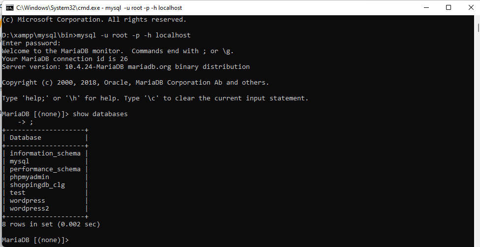
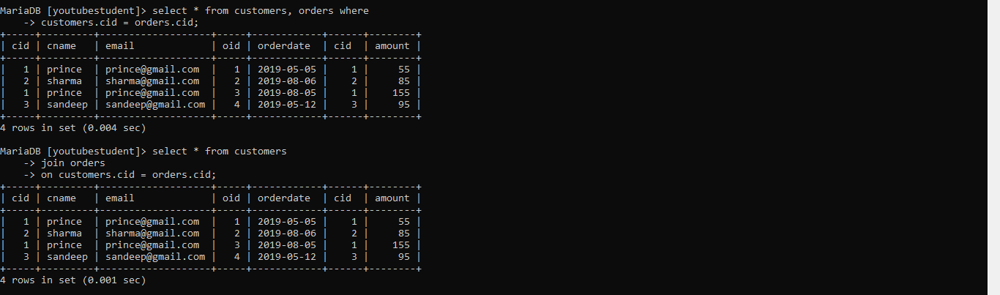

heyyy... in this article we will learn all basics of sql language which are required for beginners with some advance topics
First Step of this blog is to download the Xampp server.
You can refer this Video to download and Install Xampp server..
After Installation just start the services By clicking Start Buttons
Now Lets Start
Go to this Location of your system and open cmd D:\xampp\mysql\bin
After that, write this command on your cmd to start using mysql server from cmd as well along with
the browser feature provided default mysql -u root -p -h localhost
Now just start writing the commands shown in the below Images
1. Databases check (it will show all databases present on your sql server)
2. Create Database Command
3. Check Created Database
4. Delete Created Database
5. create Db(database) again
6. Start using the created database
7. checking in which database we are present
From Now we will see CRUD operations (Create Read Update Delete)
Table
1. Create Table
2. Show Tables
3. Describe table structure
4. Desc Table other method

5. Delete Table
6. Create table Again
Insert
Simple Query to Insert
Select
Simple Query Select data from table
Not Null
Adding validation to a column that this column should not be null or empty
default
If no data will be entered in this column then this value will be entered
Alter
Modify Columns structure
Drop Column
Drop particular column
Unique
Adding validation to a column that this column's value entered should be unique
Inserting only unique Values otherwise error will come
Auto Increment
Particular Column's value will be auto incremented
showing Auto increment schema
Inserting some Data for Further Examples
.png)
Where
Where Example 2
Update Data
Distinct
OrderBy
Limit
Like
Max , Min , Sum , Count , Avg
Not Operator
Not Operator Example2
Between
Not Between
In Operator
Concat
Reverse
Reverse and Concat Example
Charlength , Lower , Upper
DateTime datatype table creation
Inserting data in datetime format table in Wrong and Right both Ways
Inserting Current date and Time
JOINS
Primary Key : it will make a particular column as unique as well as identifier of the particular table
Foreign Key : it ia a key in one table that refers to the primary key in another table.
Enterig one more column at Orders table
Joins Start..
Inserting data into Customers
Inserting data into Orders
.png)
Present Data in Both Tables
Inserting some more data
Inner Join
Inner Join with specific Columns
Left and Right Join
That's it. ThankYou